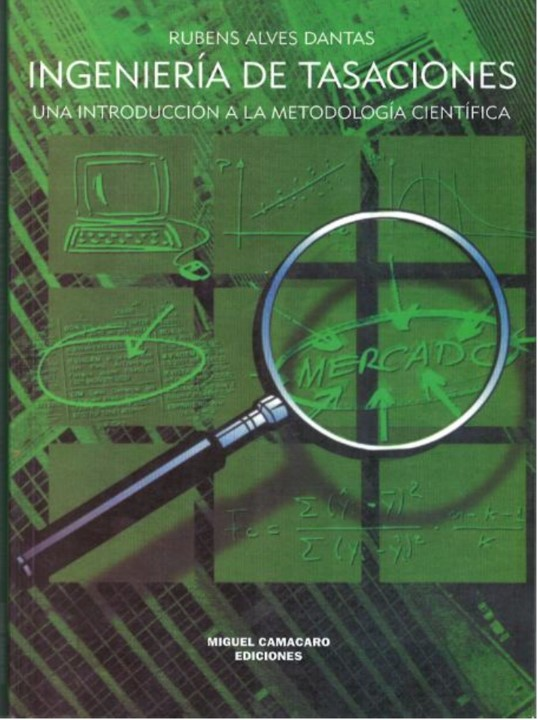

Ingeniería de Tasaciones
Una introducción a la metodología científica. Tratado fundamental que transformó la valuación inmobiliaria iberoamericana, consolidando la inferencia estadística, los modelos de regresión y el rigor técnico-científico.

Presentación y Reconocimiento Institucional
Un texto que marca un hito en la divulgación de las técnicas estadísticas e inferenciales aplicadas a la tasación de inmuebles.
«Para la Sociedad de Ingeniería de Tasación de Venezuela - SOITAVE es motivo de especial orgullo patrocinar este libro... La publicación de textos como este, traducido al castellano por un apreciado miembro de nuestra Sociedad y presidente del Capítulo Lara, el Ing. Miguel Camacaro Pérez, cumple con uno de los objetivos de SOITAVE: la divulgación de las técnicas estadísticas aplicadas a la tasación».
«La Ingeniería de Tasaciones tuvo un avance significativo principalmente por la introducción de la Metodología Científica como soporte a los métodos técnicos... Este libro pretende dar una visión general sobre los métodos utilizados y las nociones básicas para la adecuada utilización del Método Comparativo a partir de la Investigación Científica».
Autor & Traductor-Editor
Dos destacados referentes de la Ingeniería de Tasaciones en Iberoamérica unidos para llevar esta obra trascendental al idioma castellano.

Prof.Dr. RUBENS ALVES DANTAS
Ingeniero Civil, Máster en Ingeniería de Producción y Doctorado en Economía. Catedrático en Universidad Federal de Pernambuco, donde imparte: Valoraciones Masivas y Planes de Valor, Valoración Económica de Empresas e Ingeniería de Valoración. Director Dantas Engenharia. Ex-presidente de SOBREA e IBAPE-PE.

ING. MIGUEL CAMACARO PÉREZ
Ingeniero Civil por la Universidad de Los Andes (Venezuela), especialización en Valuación Inmobiliaria, Máster en Ciencias en Gerencia de la Construcción, Profesor universitario. Expresidente SOITAVE Lara. Referencia internacional en la integración de Ciencia de la Valuación, Ciencia de Datos e Inteligencia Artificial Generativa.
Estructura de la Obra
Explora los 10 capítulos del tratado haciendo clic para abrir de inmediato el lector interactivo en las páginas correspondientes.
La Ingeniería de Tasaciones
Conceptos fundamentales de valor, mercado inmobiliario, ley de oferta y demanda, competencia perfecta vs. imperfecta, y diagnóstico de estructura y conducta de mercado.
Metodología Básica Aplicable
Método comparativo de mercado, costo de reproducción y depreciación física, método de la renta, método involutivo dinámico, método residual y niveles de rigor normativos.
Metodología Científica
Preparación de la investigación de mercado, selección de variables influyentes, trabajo de campo, precisión muestral, análisis exploratorio y modelaje por computador.
Inferencia Estadística Aplicada
Distribuciones de probabilidad (Normal, t-Student, Snedecor, Lognormal), estimadores de tendencia central y dispersión, e intervalos de confianza para avalúos.
Regresión Lineal Simple
Linealización de ecuaciones, estimación de parámetros por mínimos cuadrados, comprobación de supuestos básicos, detección de outliers y pruebas de significancia.
Regresión Lineal Múltiple
Modelo lineal general, transformaciones de potencia (Box-Cox, Tukey), significancia global e individual, y aplicación práctica con datos reales (Caso Brasilia).
Modelos Especiales
Inclusión de variables dicotómicas y cualitativas (Variables Dummy), análisis de residuos y casos prácticos en locales comerciales y parcelas urbanas.
Modelos Lineales Generalizados (GLIM)
Componentes aleatorio y sistemático, función de enlace, análisis de deviance y aplicación práctica computacional para estructuras de datos complejas.
Tasación de Terrenos Urbanizables
Desarrollo matemático del método involutivo bajo óptica de análisis de inversiones, considerando ritmos de ventas uniformes y aleatorios con simulación.
Presentación del Informe Técnico
Estructuración formal del dictamen pericial de acuerdo con la norma NB-502/89, caracterización física, diagnóstico de mercado y fundamentación del valor.
Tablas Técnicas & Código Fuente
Tablas estadísticas completas, Tablas de Depreciación Ross-Heidecke y programa computacional en lenguaje BASIC para la tasación de loteamientos urbanizables.
Cargando tratado digital...